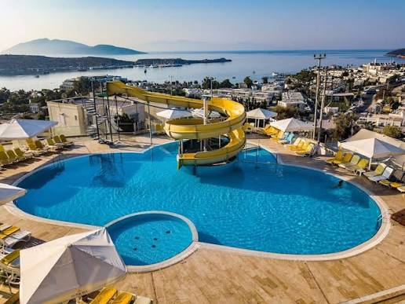
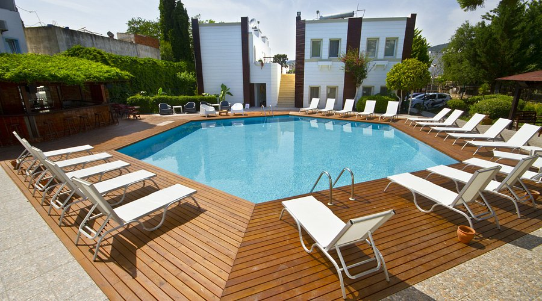

2024 - Devam Ediyor
Muğla Sıtkı Koçman Üniversitesi
Yiyecek İçecek İşletmeciliği, 3. Sınıf Öğrencisi.
Hizmet kalitesi ve misafir memnuniyetine odaklı, dinamik ortamlara kolay adapte olan disiplinli bir profesyonel. Akademik eğitimimi pratikle birleştirerek sektörde fark yaratmayı hedefliyorum.
Muğla Sıtkı Koçman Üniversitesi Yiyecek ve İçecek İşletmeciliği Bölümü 3. sınıf öğrencisi olarak eğitimime devam ediyorum. Gastronomiyi yalnızca yemek sunumundan ibaret görmüyor; misafirlere keyifli, kaliteli ve unutulmaz deneyimler yaşatmanın önemli bir parçası olarak değerlendiriyorum. Hizmet kalitesini ve misafir memnuniyetini ön planda tutan, disiplinli, dinamik ve takım çalışmasına yatkın biriyim. Yoğun çalışma temposuna kolayca uyum sağlayarak kendimi geliştirmeye ve yeni deneyimler kazanmaya önem veriyorum. Sıcak ve soğuk mutfak eğitimlerimle edindiğim bilgi ve becerileri, sahadaki pratik deneyimlerimle pekiştirerek gastronomi sektöründe kendimi geliştirmeyi ve alanında yetkin, başarılı bir profesyonel olmayı hedefliyorum.
Müşteri değil misafir; yüksek standartlarda hizmet kalitesi ve memnuniyet.
Stres altında sakin kalabilme ve hızlı tempoya anında adapte olma yeteneği.
Modern işletme prensiplerini gastronomi pratiğiyle birleştiren yenilikçi bakış.

Bodrum'un en prestijli tesislerinden birinde yüksek standartlarda misafir memnuniyeti ve elit servis hizmeti sağladım.

Dinamik bir ekip ortamında restoran işleyişine destek vererek servis kalitesinin artırılmasında görev aldım.

Şehir içi yoğun hizmet temposuna ayak uydurarak hızlı ve etkili yiyecek-içecek servisi tecrübesi edindim.
Yiyecek İçecek İşletmeciliği, 3. Sınıf Öğrencisi.
Profesyonel mutfak operasyonları ve temel aşçılık pratikleri sertifikasyonu.
Endüstriyel mutfak ve restoran alanlarında güvenli çalışma prosedürleri eğitimi.
Gıda güvenliği, sanitasyon ve kişisel hijyen standartları sertifikasyonu.